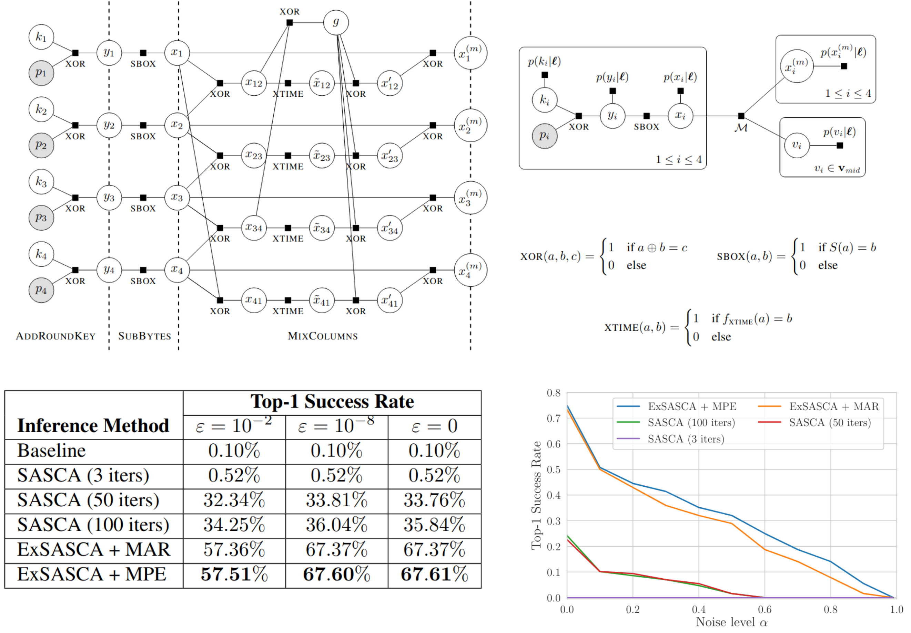
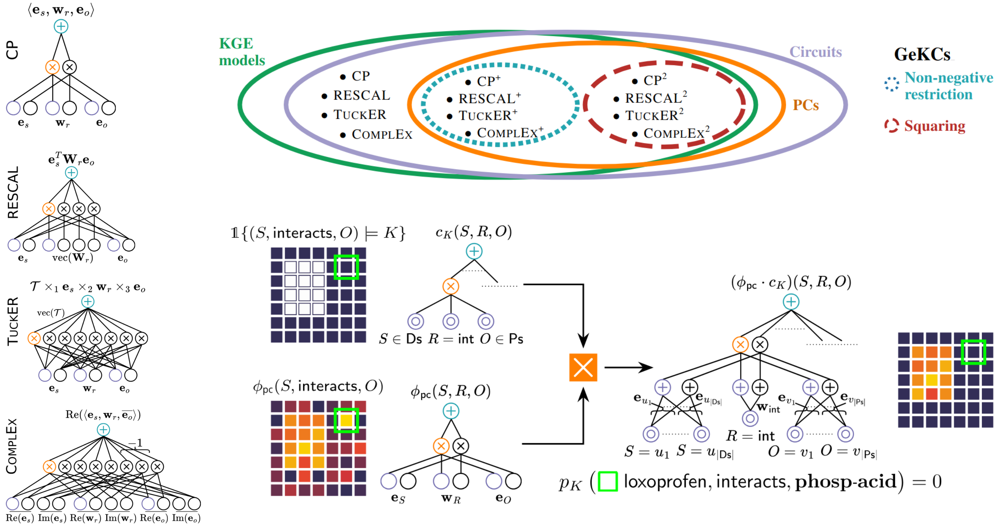
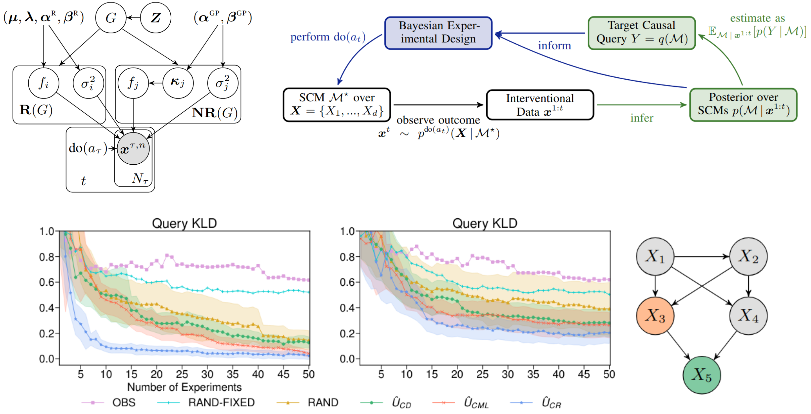

Recent Paper Highlights

ICML'24
Exact Soft Analytical Side-Channel Attacks using Tractable Circuits
Thomas Wedenig, Rishub Nagpal, Gaëtan Cassiers, Stefan Mangard, Robert Peharz
Cryptographic algorithms are safe—unless they executed on a physical device...
A prominent attack in information security is the
soft analytic side channel attack (SASCA)
which assumes that the attacker has access to a copy of the device under attack.
With this, the attacker can develop so-called templates, i.e. statistical models predicting
intermediate computational results from physical side channels (power trace, temperature,
electromagnetic emissions, timing, etc.).
These "soft guesses" about intermediate results, together with the logical knowledge about
the cryptoalgorithm can be used to infer the secret key with astonishing high success rate.
Basically, one is facing a complicated and high-dimensional probabilistic-logic inference
problem, which is usually approximated with loopy belief propagation.
In this paper, we show that, surprisingly, one can solve such challenging inference problems
even
exactly using the power of tractable circuits!
Results are substantially increased top-1 success rates, higher noise resilience
(demonstrating increase vulnerability of protected implementations) and a proof-of-concept
for future attack scenarios.
Abstract |
Paper |
Code

NeurIPS'23 oral!
How to Turn Your Knowledge Graph Embeddings into Generative Models
Lorenzo Loconte, Nicola Di Mauro, Robert Peharz, Antonio Vergari
Knowledge graphs (KGs) are probably the most prominent way to represent structured domain information
and are heavily used in services by big players such as Goolge and Amazon.
KGs are basically directed multi-graphs on
subjects and
objects where links
in the graph correspond to
predicates.
Knowledge graph embeddings (KGEs) represent KGs (
symbolic) as real- or complex-valued
vectors (
sub-symbolic), allowing to link KGs with powerful deep learning approaches.
It turns out that the most common KGEs can be interpreted as (probabilistic) circuits!
This opens the door for generative training, efficient inference and neuro-symbolic tricks, such
as incorporating hard logical knowledge in our KGs.
Abstract |
Paper |
Code

NeurIPS'22
Active Bayesian Causal Inference
Christian Toth, Lars Lorch, Christian Knoll, Andreas Krause, Franz Pernkopf, Robert Peharz, Julius Von Kügelgen
Since thousands of years, humans wonder about the nature of causality.
From a technical perspective, this question becomes relatively benign if we put forward a
mathematical model of causality, such as a structural causal model (SCM).
In a nutshell, an SCM is just a dependency network among quantities, where the value of each
quantity is determined as a function of other quantities and exogenous noise.
Thus, an SCM is specified via a directed acyclic graph (DAG), a set of mechanisms (functions doing the
assignment) and a distribution over exogenous variables.
If we completely know the SCM, then we can answer causal queries on all levels of Pearl's
hierarchy, that is (i) observational, (ii) interventional and (iii) counterfactual queries.
Problem: we don't know the SCM. Very often we know even almost nothing about it.
Thus, at its core, causal reasoning is busy with an epistemic challenge, i.e. how much do we
know about the model and how can we work with that.
Whenever there is a epistemic uncertainty, the
natural Bayesian reflex is "I put a prior on this
and infer the posterior".
In this paper, we are going full Bayesian over entire SCMs and develop methods to handle the
"computational nightmare" which usually comes with Bayesian computation.
Wonderful features of this approach is that we can directly infer causal queries without
fully knowing the SCM, but uncertainty estimates on them, and use Bayesian epistemic
uncertainties to actively collect interventional data, in order to answer our causal questions
with as little data as possible.
Abstract |
Paper |
Code
 NeurIPS'20
Joints in Random Forests
NeurIPS'20
Joints in Random Forests
Alvaro Correia, Robert Peharz, Cassio P. de Campos
Decision trees and random forests are some of the most widely used machine learning models,
and random forests are one of the strongest classifiers on tabular data.
But did you know that there was always a generative model hiding in your random forest?
Here we show how to exploit this fact for little extra resources.
Specifically, we show how decision trees can be translated into probabilistic circuits (PCs), and random forests
into an ensemble of PCs.
This generalizes the possibilities of standard random forests, such as consistent treatment of
missing data (by probabilistic inference) and outlier detection.
Abstract |
Paper |
Video |
Code
 ICML'20
Einsum Networks: Fast and Scalable Learning of Tractable Probabilistic Circuits
ICML'20
Einsum Networks: Fast and Scalable Learning of Tractable Probabilistic Circuits
Robert Peharz, Steven Lang, Antonio Vergari, Karl Stelzner, Alejandro Molina, Martin Trapp, Guy Van Den Broeck, Kristian Kersting, Zoubin Ghahramani
Probabilistic circuits are tractable probabilistic models and allow exact and efficient inference.
However, they used to be slow in comparison to deep neural networks, since their special structure
(which makes them tractable in the first place) does not map nicely onto deep learning frameworks
such as PyTorch or Tensorflow. Here we proposed a "smart" implementation of PCs, by squeezing all PC
operations into one a handful large
einsum operations.
The result: dramatic speedups and memory savings, large-scale
generative modeling, including data imputation and outlier detection.
Abstract |
Paper |
Video |
Code
 AISTATS'20
Deep Structured Mixtures of Gaussian Processes
AISTATS'20
Deep Structured Mixtures of Gaussian Processes
Martin Trapp, Robert Peharz, Franz Pernkopf, Carl Edward Rasmussen
Gaussian processes (GPs) are a powerful tool for Bayesian regression, as they represent a prior
over functions, which gets updated to a posterior via Bayesian inference.
Interestingly, this Bayesian update is tractable as it takes cubic time and quadratic memory.
While polynomial, this complexity is still prohibitive for large data, i.e. a few thousand data points.
Here we marry GPs with probabilistic circuits (PCs), yielding
Deep Structured Mixture of Gaussian Processes (DSMGPs),
a new process model which elegantly mixes the tractable inference mechanisms of GPs and PCs.
The new model fits data better than several GP approximations while having comparable runtimes.
DSMGPs are also more data efficient than these approximate techniques and allow to model heteroscedastic noise.
Abstract |
Paper |
Video |
Code
 ECML PKDD'20
PS3: Batch Mode Active Learning for Hate Speech Detection in Imbalanced Text Data
ECML PKDD'20
PS3: Batch Mode Active Learning for Hate Speech Detection in Imbalanced Text Data
Ricky Maulana Fajri, Samaneh Khoshrou, Robert Peharz, Mykola Pechenizkiy
The steadily growing prominence of social media exacerbates the problem of hostile
contents and hate-speech.
Automatically recognizing hate-speech is difficult, since the difference between hate-speech
and non-hate-speech might be subtle.
Moreover, hate-speech is relatively rare, leading to a highly class-skewed problem.
We developed PS3, a simple and effective batch mode active learning solution, which
updates the detection system by querying human domain-experts to annotate carefully selected
batches of data instances.
Despite its simplicity, PS3 sets state-of-the art on several hate-speech datasets.
Abstract |
Paper |
Video |
Code
 ICML'19
Hierarchical Decompositional Mixtures of Variational Autoencoders
ICML'19
Hierarchical Decompositional Mixtures of Variational Autoencoders
Ping Liang Tan, Robert Peharz
Variational autoencoders (VAEs) are simple and powerful neural density estimators and have
received a lot of attention recently.
However, inference and learning in VAEs is still challenging due to the intractable nature of the
model, especially in high dimensional data spaces.
Here we propose a
divide-and-conquer approach and break up the overall density estimation
problem into many sub-problems, which are each modeled with a set of "small VAEs."
Learning and inference in these VAE components are orchestrated via probabilistic circuits
(PCs), yielding hierarchical decompositional mixtures of VAEs.
This novel model effectively uses
hybrid exact-approximate inference (exact from PCs,
approximate from VAEs) in a natural way.
We show that our model outperforms classical VAEs on almost all of our experimental
benchmarks.
Moreover, we show that our model is highly data efficient and degrades very gracefully in
extremely low data regimes.
Abstract |
Paper |
Code
 UAI'19
Random Sum-Product Networks: A Simple and Effective Approach to Probabilistic Deep Learning
UAI'19
Random Sum-Product Networks: A Simple and Effective Approach to Probabilistic Deep Learning
Robert Peharz, Antonio Vergari, Karl Stelzner, Alejandro Molina, Xiaoting Shao, Martin Trapp, Kristian Kersting, Zoubin Ghahramani
Probabilistic circuits (PCs) such as sum-product networks (SPNs) are expressive probabilistic
models with a rich set of exact and efficient inference routines.
Their structure, however, does not easily map to deep learning frameworks such as Tensorflow.
Here we use an unspecialized random SPN structure which maps easily onto these frameworks and
can be scale to millions of parameters.
These
Random and Tensorized SPNs (RAT-SPNs) perform often en par with state-of-the-art
neural net learners and deep neural networks on a diverse range of generative and discriminative
tasks.
RAT-SPNs can be used to naturally treat missing data and for outlier analysis and detection.
Abstract |
Paper |
Code